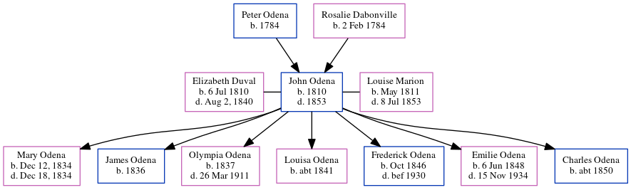

John Hypolite Odena 1810 - 1853
[ Home ] | [ Calendar ] | [ Surnames Index ] | [ Census Index ] | [ Family History ]The child of Peter Odena and Rosalie Dabonville, John Odena, the 3 times great-grandfather of Michele Copp (née Phillips), was born in Charleston, South Carolina, USA in 18101, was baptized in Charleston, South Carolina in October 15, 1811 was married twice - to Elizabeth Duval (in Feb 1834) Louise Marion (in Feb 20, 1841, following the death of Elizabeth in Aug 2, 1840). He had 7 children: Louisa Marion, Frederick Marion, Emilie Mae and Charles T with Louise Marie; and Mary Anna Lenora, James Henry and Olympia Eugenie with Elizabeth.
During his life, he was living in Darien, McIntosh, Georgia, USA in 18302; in St Michael and St Phillip, Charleston, South Carolina in 18501; and in Charleston, South Carolina Charleston3.
He died in 1853 in Atlanta, , Georgia (per Josephine Marion's obituary he died soon after they moved).
Parents
- Peter was born in 1784
- Rosalie was born on Feb 2, 1784
Children
- Mary Anna Lenora was born in Dec 12, 1834
- James Henry was born in 1836
- Olympia Eugenie was born in 1837
- Louisa Marion was born c. 1841
- Frederick Marion was born in Oct 1846
- Emilie Mae was born on Jun 6, 1848
- Charles T was born c. 1850
Citations
- 1850 United States Federal Census Online publication - Provo, UT, USA: The Generations Network, Inc., 2005.Original data - United States of America, Bureau of the Census. Seventh Census of the United States, 1850. Washington, D.C.: National Archives and Records Administration, 1850. M432,
- 1830 United States Federal Census Online publication - Provo, UT, USA: The Generations Network, Inc., 2004.Original data - United States of America, Bureau of the Census. Fifth Census of the United States, 1830. Washington, D.C.: National Archives and Records Administration, 1830. M19, 201
- U.K. and U.S. Directories, 1680-1830 Online publication - Provo, UT, USA: The Generations Network, Inc., 2003.Original data - Avero Publications. Biography Database, 1680-1830. Newcastle-upon-Tyne, England: Avero Publications, 1998.Original data: Avero Publications. Biography Database, 1680-1
Notes
Middle initial "C" is unconfirmed.
Family Tree
Generated by ged2site. Last updated on Jun 6, 2024